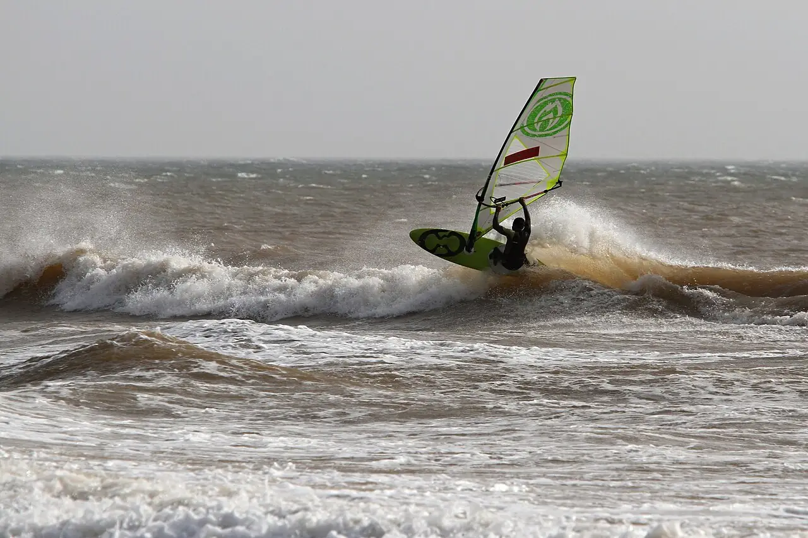

Moulay Bouzerktoun
Essaouira, Maroc · windsurf, kitesurf, surf

Petit village de pêcheurs au nord d’Essaouira, parmi les spots de windsurf en vagues les plus réputés d’Afrique. L’alizé de nord-est, fort en été, souffle en side-shore sur des vagues puissantes.
- Lieu
- Essaouira, Maroc
- Niveau
- Expert
- Activités
- windsurf, kitesurf, surf
- Type d'eau
- Mer / océan
- Coordonnées
- 31.64, -9.68 (position approximative du secteur)
Dangers à connaître
- Plateaux rocheux et récifs dans la zone de vagues.
- Vagues puissantes et courants, sans secours organisé.
Le conseil d'Ocean Buddy
Réservé aux riders autonomes en vagues : les débutants ont intérêt à rester dans la baie d’Essaouira.
Ouvrir dans Ocean Buddy Télécharger sur l'App Store
Source : Fiche Ocean Buddy · septembre 2026 · à vérifier localement.